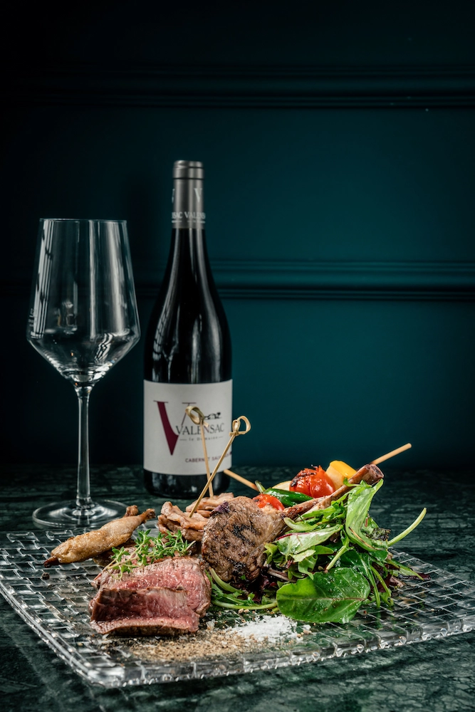
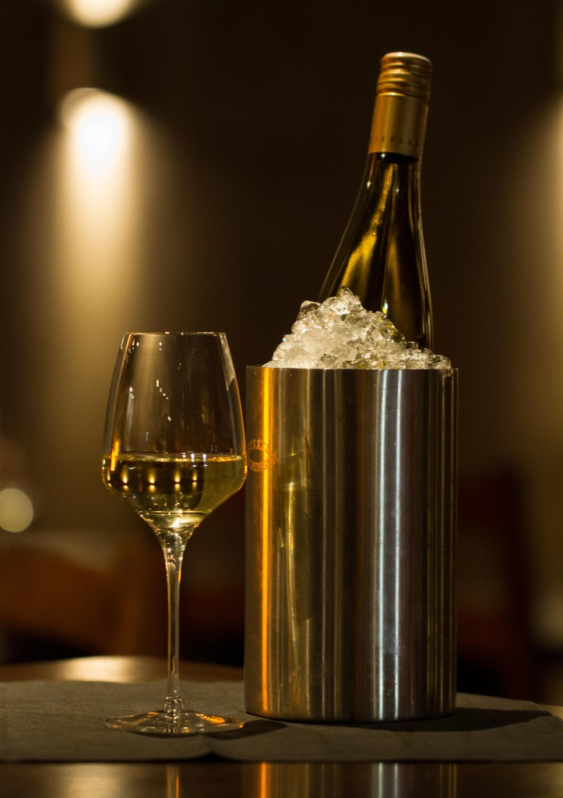
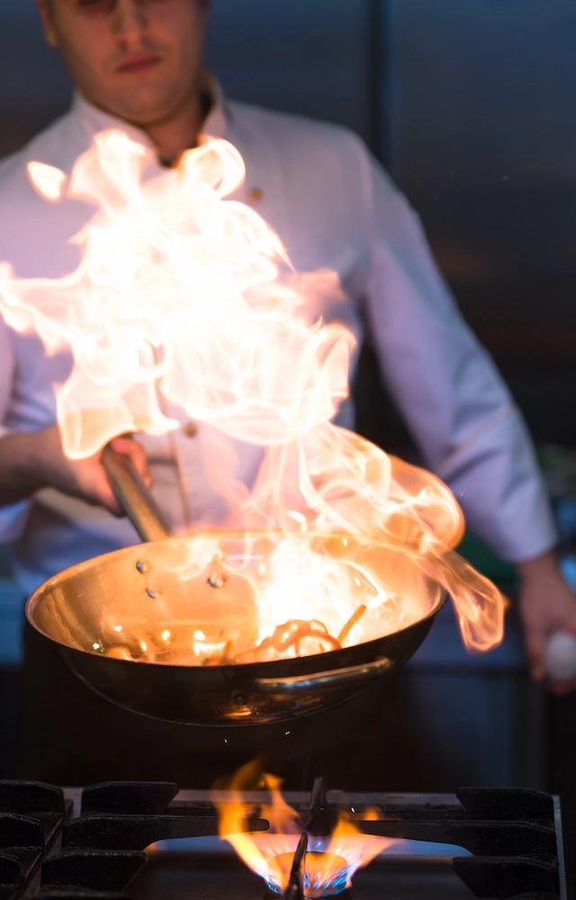
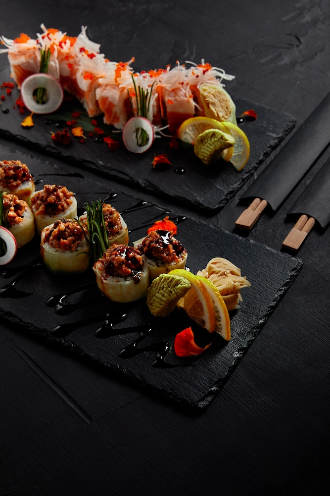
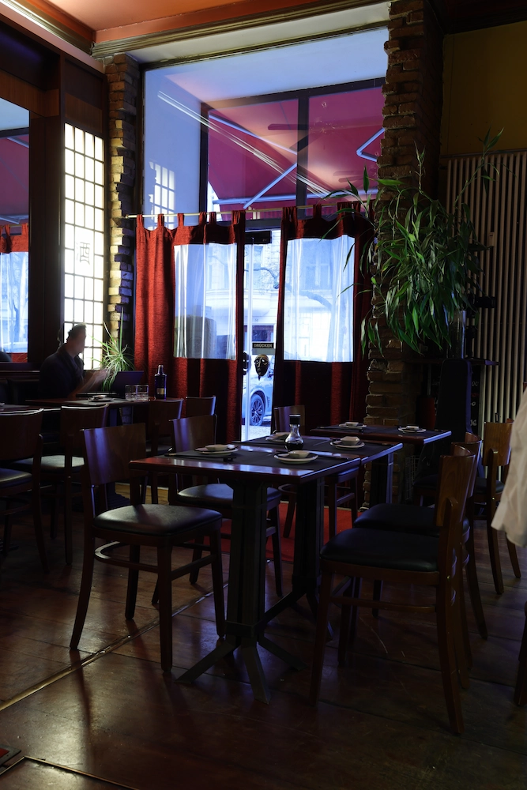
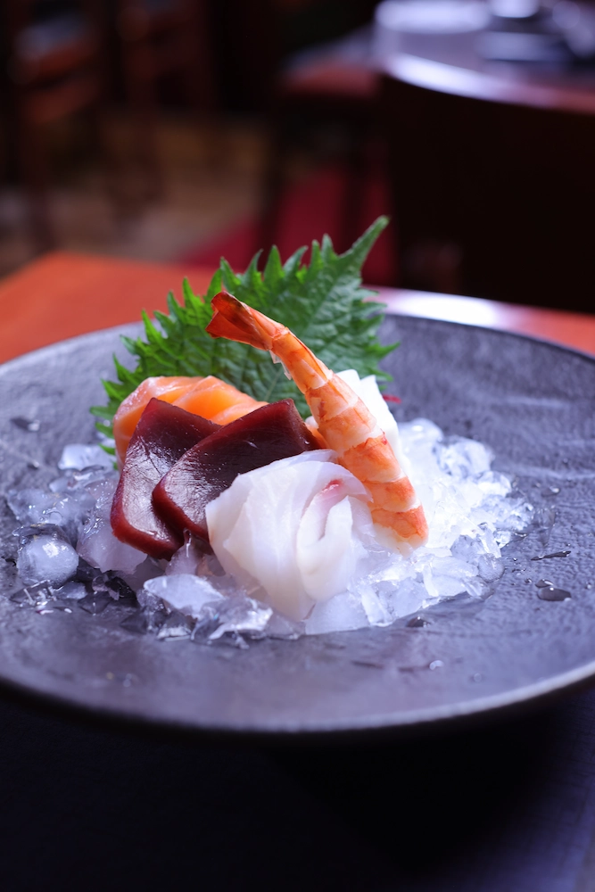
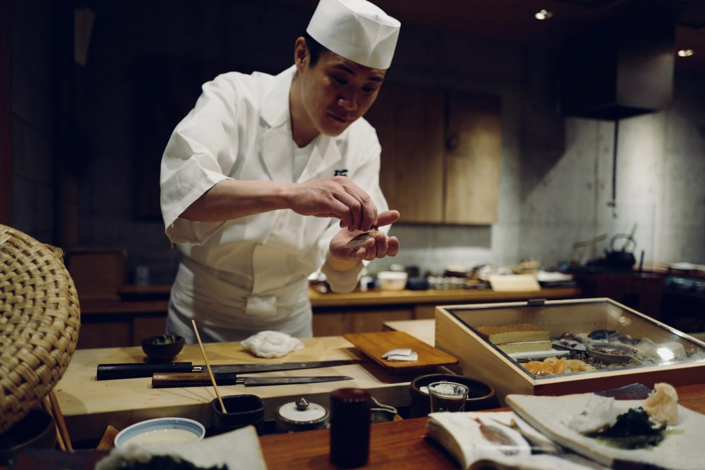

The Essence of Japanese Fusion
Exzellenz in ihrer reinsten Form.
Minakami verbindet traditionelle japanische Kochkunst mit moderner Raffinesse. Jedes Gericht ist eine Hommage an Perfektion – geschaffen für jene, die das Besondere suchen.
Menü ansehenTradition in Bewegung. Perfektion im Detail.
Inspiriert von der Stille Japans und der Energie Berlins, vereint Minakami beides in einer kulinarischen Harmonie. Unsere Küche ist Reduktion auf das Wesentliche – Geschmack, Textur, Balance. Ein Ort, an dem Einfachheit Luxus bedeutet.


Kulinarische Harmonie
Minakami vereint traditionelle japanische Techniken mit modernen Einflüssen. Sushi, Fleisch und erlesene Weine verschmelzen zu einer Erfahrung, die raffiniert, klar und kompromisslos ist.
- Live Cooking Events: Bei Ihnen zu Hause oder in einer geeigneten Location Ihrer Wahl (bis zu 50 Personen)
- Hochzeitscatering: Wir sorgen für den kulinarischen Hochgenuss auf Ihrer Hochzeitsfeier (bis zu 200 Personen)
- Live Musik: Fernöstliche Lebenskultur und Erlebnisgastronomie – jeden Freitag und Samstag von 22 bis 2 Uhr
Galerie





Die Stimmen unserer Gäste
„Das beste Sushi, das ich außerhalb Japans erlebt habe. Atmosphäre, Service, Geschmack – alles in Balance.“
– David R.
„Minakami ist kein Restaurant, sondern eine Erfahrung. Elegant, still, unvergesslich.“
– Elena K.
„Ein Ort, an dem Zeit stillsteht. Jeder Gang ein Kunstwerk – dezent, präzise, vollkommen.“
– Sophie M.
Kontakt & Reservierung
Für Reservierungen, private Dining-Erlebnisse oder Anfragen steht Ihnen unser Team jederzeit zur Verfügung.
Telefon: 030 24355756
E-Mail: info@minakami-jfk.de